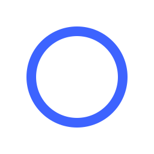
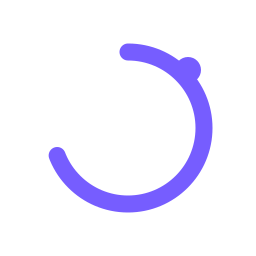
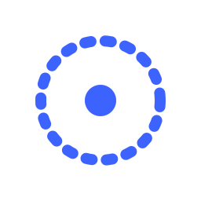
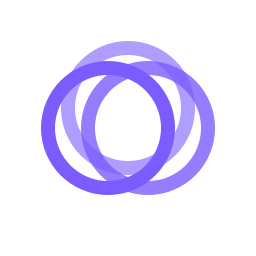
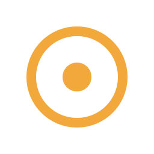
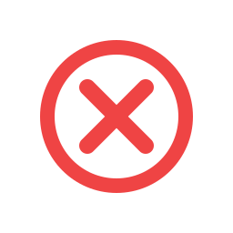

Idle
Ready
POCK is active and waiting for a task.
 CK
CK
POCK is active and waiting for a task.

POCK is working on a task, with a satellite in orbit.

POCK is searching for information or options.

POCK is analyzing, reasoning, and solving.

POCK needs your input or decision.

Task completed and verified successfully.

Something went wrong. Needs attention.